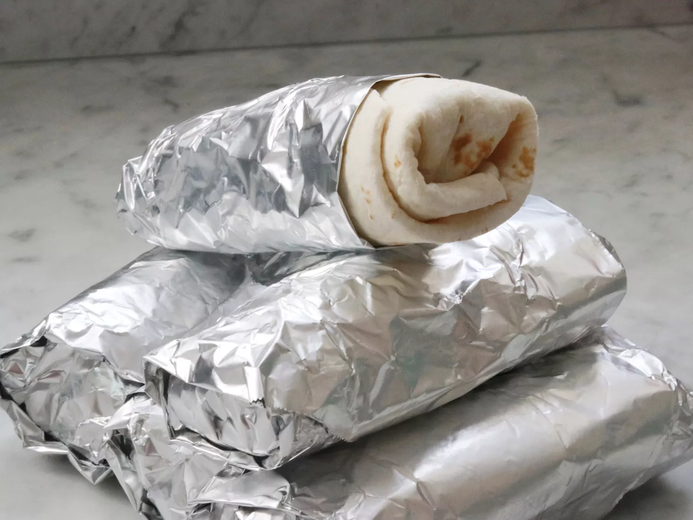

Freeze and Reheat Breakfast Burritos

Description
I found this recipe on allrecipes.com in the
breakfast category.
It's posted by the user fabeveryday. Here's their description.
"Learn how to make breakfast burritos with this recipe intended to be made in a large batch so that individual burritos can be frozen and reheated as needed. Making these in advance
and freezing is a big time-saver for busy mornings!"
Ingredients
- 1 (12 ounce) package bacon
- 10 large eggs
- 3 tablespoons milk
- ¼ teaspoon salt
- 3 tablespoons vegetable oil
- 4 cups frozen hash brown potatoes with peppers and onion (such as Ore-Ida® Potatoes O'Brien®)
- ½ teaspoon garlic salt
- ¼ teaspoon ground black pepper
- 10 sheets aluminum foil
- 10 large flour tortillas
- 1 ½ cups shredded Cheddar cheese
- 1 cup salsa, or to taste
Steps
- Place bacon in a large skillet and cook over medium-high heat, turning occasionally, until evenly browned, about 10 minutes. Drain on paper towels and crumble into bits. Keep
the skillet warm.
- Whisk together eggs, milk, and salt in a bowl until combined. Pour into the hot skillet. Cook and stir over medium-high heat until eggs are scrambled and set, about 5 minutes.
Transfer to a bowl.
- Heat oil in the same skillet over medium-high heat. Add frozen potatoes, garlic salt, and pepper. Fry until browned on the bottom, 4 to 5 minutes. Flip and cook until other side
is browned, 4 to 5 minutes more. Let cool.
- Lay 10 sheets of aluminum foil, slightly larger than tortillas, on a flat work surface. Lay 1 tortilla on each aluminum foil piece; evenly distribute Cheddar cheese on top. Add
scrambled eggs, bacon bits, salsa, and potatoes to each tortilla, in that order. Tightly roll burritos, tucking tops and bottoms in first.
- Wrap aluminum foil tightly around each burrito, covering it completely. Place in resealable plastic bags in a single layer. Remove as much air as possible from the bags before
sealing. Store in the freezer until ready to reheat.
- Reheat by removing the aluminum foil, placing burrito on a microwave-safe plate, and covering it with a paper towel. Heat in the microwave until evenly warmed through,
1 to 2 minutes.
- Enjoy!